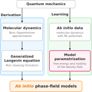
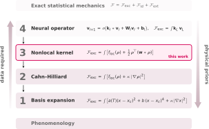

1Department of Mathematics, National University of Singapore
2Department of Materials Science and Engineering, National University of Singapore
3Institute for Functional Intelligent Materials, National University of Singapore
*Corresponding author
Key insights
Ab initio: grounded in microscopic theory
We derive the mesoscopic equation from a Mori–Zwanzig projection of molecular dynamics onto species-density fields under explicit assumptions, rather than postulating it.
Ab initio data, from MLIP-driven MD
We train on short molecular dynamics trajectories of a few thousand atoms, generated with machine-learning interatomic potentials of ab initio accuracy, without external potentials.
Learned from non-equilibrium dynamics
We learn from the dynamics of demixing and interface relaxation rather than from equilibrium sampling, which is data efficient and gives direct access to the spinodal region.
Free-energy functional and mobility, from systematic ladders
We select the free-energy functional and mobility from ladders of systematically improvable models, with their parameters learned jointly from the same dynamics.
Ab initio in both derivation and learning
We develop ab initio phase-field (AIPF) models, grounded in microscopic theory and data. The term ab initio is used in the same spirit as in ab initio molecular dynamics (AIMD). In AIMD,
the equations of nuclear motion follow from quantum mechanics under the Born–Oppenheimer approximation;
the forces are computed using density functional theory, where the exchange–correlation functional is chosen from a ladder of systematically improvable approximations known as Jacob's ladder.
So what makes a phase-field model ab initio? Hover a column of the figure below.

Derivation and learning
Ab initio in both its derivation and its learning. Both start from quantum mechanics.
Hover a column.
Derivation
Quantum mechanics to molecular dynamics under the Born–Oppenheimer approximation
Molecular dynamics to a generalized Langevin equation through the Mori–Zwanzig formalism
The generalized Langevin equation to the ab initio phase-field model under three assumptions
Markovian dynamics
Local mobility
Gaussian white noise
Learning
MLIP-driven molecular dynamics of ab initio accuracy
Free energy and mobility parametrized by neural networks, with their forms chosen from the ladders
The ladders
The excess free energy carries all interparticle correlations. From exact statistical mechanics down to phenomenology, each lower rung restricts its form further. Hover or tap a rung to see its functional form.

Each lower rung introduces additional restrictions, reducing flexibility and training-data requirements.
The ideal-gas part Fid and the external-potential part Fext are known exactly, with Λα the thermal wavelength. The excess part Fexc accounts for interparticle interactions, and every rung below is an approximation of it.
Rung 4 · Neural operator
v0=ρ,vl+1=σ(kl∗vl+Wlvl+bl)Fexc=∫kLvL
A neural operator, with layer fields vl, convolution kernels kl(r−r′,T), channel-mixing weights Wl, biases bl(T) and a pointwise nonlinearity.
Here floc is a function of the local densities and Wαβ the radial kernel between species α and β. The kernel extends the square-gradient term of rung 2 to the full wavevector dependence of the pair correlations.
Rung 2 · Cahn–Hilliard
Fexc=∫[floc(ρ,T)+κ∣∇ρ∣2]dr
The Cahn–Hilliard square-gradient form with coefficient κ.
Rung 1 · Basis expansion
Fexc=∫[n∑cn(T)ϕn(x)+κ∣∇x∣2]dr
A prescribed basis expansion in composition x, with basis functions ϕn such as Landau polynomials or Redlich–Kister terms and coefficients cn(T).
Each lower rung restricts the mobility further, from a functional of the whole density field to a single constant.
Exact statistical mechanics
The exact Mori–Zwanzig projection gives a generalized Langevin equation with a memory kernel, which describes how the density at the current time is affected by its past. The mobility is the time integral of this kernel, and every rung below approximates it.
Rung 4 · Nonlocal mobility
The mobility couples every pair of points and depends on the whole density field.
Rung 3 · Local mobility this work
Mθ=Cθ1/2D1/2LθLθ⊤D1/2Cθ1/2
D=diag(ρ), the species densities
Lθ(ρ), lower triangular, parametrized by a multilayer perceptron (MLP)
Cθ(T)=diag(cα,θ(T)), Arrhenius factors with one learned activation energy Eα per species:
cα,θ(T)∝e−Eα/kBT
The mobility depends only on the densities and temperature at the same point. The construction makes Mθ symmetric and positive semidefinite.
Rung 2 · Prescribed density dependence
M=c(T)g(ρ)
The density dependence g is fixed in advance, and only a few constants are fitted.
Examples
Ideal mobility, as in dynamical density functional theoryMαβ=δαβkBTDαρα
Degenerate Cahn–Hilliard mobilityM=M0x(1−x)
Rung 1 · Constant mobility
M=M0,M0=const
A constant mobility, fixed separately or prescribed, as in standard phase-field models. It sets the relaxation rate but carries no dependence on density or composition.
Method
Data generation.Short molecular dynamics trajectories of small systems containing a few thousand atoms, driven by a machine-learning interatomic potential of ab initio accuracy, without external potentials. The trajectories start from unstable homogeneous mixtures or slabs and are coarse-grained into species-density fields.
Training. The free energy and mobility, parametrized by neural networks, are learned jointly by matching the deterministic part of the mesoscopic equation to the measured evolution of the density fields,
Ldyn=⟨∂tρ−∇⋅[Mθ∇μθ]H−12⟩.
Fluctuations in homogeneous equilibrium trajectories provide additional constraints on the mobility and the curvature of the free energy.
Inference. The free energy alone gives the phase diagram. Together with the mobility, it gives fluctuating phase-field dynamics at length and time scales that molecular dynamics cannot reach without parallelization.
Thermodynamics
δρ(r)δFθ=μ
Dynamics
∂t∂ρ=∇⋅[Mθ∇δρδFθ]+∇⋅[2kBTMθξ]
Results
Binary Lennard-Jones mixture
A preliminary check of the framework on a symmetric binary Lennard-Jones mixture under overdamped Langevin dynamics. Below the critical temperature the mixture demixes spontaneously within the spinodal region. The AIPF model is compared with two rung 1 baselines, Landau and Flory–Huggins, trained on the same data with the same loss and mobility parametrization.
Thermodynamics (paper Fig. 3a, panels side by side). Binodal, spinodal and Tc of the AIPF model and of the Landau and Flory–Huggins baselines against the MD binodal.
Dynamics
Spinodal decomposition (paper Fig. 3b). Left, the composition field after a quench to T=1.20, for molecular dynamics, the AIPF model and the two baselines, all from the same initial field. Each box is a single stochastic run. Right, the domain size L(t), three seeds each.
Iron–boron melt
FeB4 is predicted to be thermodynamically stable, but its synthesis has been reported only under high pressure. One route to solid-state synthesis proceeds through a transient melt at the interface between two solid precursors, which requires the melt at the target composition to be locally stable. A single AIPF model of the Fe–B melt is learned at 0, 5 and 10 GPa, and the curvature of its Gibbs free energy of mixing is quantified by the thermodynamic factor
Γ=kBTxB(1−xB)(∂xB2∂2ΔGmix)T,P,
with Γ>0 for a locally stable melt and Γ<0 inside the spinodal region.
By learning from the dynamics, the AIPF model accesses the spinodal region directly, resolving the negative curvature inaccessible to equilibrium fluctuation measurements.
Paper Fig. 4.
Γ(xB,T) at 0, 5 and 10 GPa, with the MD classification of the sampled states.
The spinodal regions at the three pressures. The star marks FeB4 at 1500 K, inside the spinodal region at 0 and 5 GPa and outside it at 10 GPa.
Γ(xB) at three temperatures for each pressure. Dots mark the FeB4 composition.
The model against MD for states that MD classifies as spinodal or unresolved. The model agrees with the spinodal classification and predicts the sign of Γ for unresolved states.
Hydrogen–helium under planetary conditions
Hydrogen–helium mixtures make up most of the mass of gas giants such as Jupiter and Saturn. Inside them, helium is hypothesized to become immiscible in metallic hydrogen and settle as droplets toward the planetary center, a process known as helium rain. Whether and where it occurs depends on the immiscibility boundary, and its evolution on the kinetics of droplet nucleation, growth and transport. A single AIPF model spans 200 to 800 GPa and 2000 to 12 000 K.
Thermodynamics
Binodal surface (paper Fig. 5a) with its critical line Tc(P), and MD snapshots of a mixed state and a demixed slab.Isobaric sections (paper Fig. 5b). Binodal and spinodal at 200, 400, 600 and 800 GPa, with MD points at 800 GPa.
Helium rain in gas giants
Where it rains (paper Fig. 5c). The helium-rain layer in a gas giant.Against published boundaries (paper Fig. 5d). The learned binodal and spinodal along the pressure axis next to earlier predictions.Jupiter and Saturn (paper Fig. 5e). The learned binodal and spinodal against the interior profiles of both planets.
The model captures droplet nucleation and growth in helium-rain simulations of a domain corresponding to 2.2 million atoms, far beyond the scale of atomistic modeling at comparable accuracy.
Dynamics simulation
Nucleation, growth and settling (paper Fig. 5f,g). Helium rain in a hydrogen–helium column at 400 GPa, 3700 to 3900 K along the planetary temperature gradient, corresponding to 2.2 million atoms. Left, the simulation from 0 to 1200 ps. Right, snapshots at 20 to 1000 ps, with droplets coloured by radius and the helium fraction on the faces of the column.
Citation
If you use this code, please cite the paper.
@article{chen2026aipf,
title = {Learning ab initio phase-field models},
author = {Chen, Mengyi and Zhong, Peichen and Zhang, Zihan and Li, Qianxiao},
journal = {arXiv preprint arXiv:2610.01432},
year = {2026},
doi = {10.48550/arXiv.2610.01432},
url = {https://arxiv.org/abs/2610.01432}
}